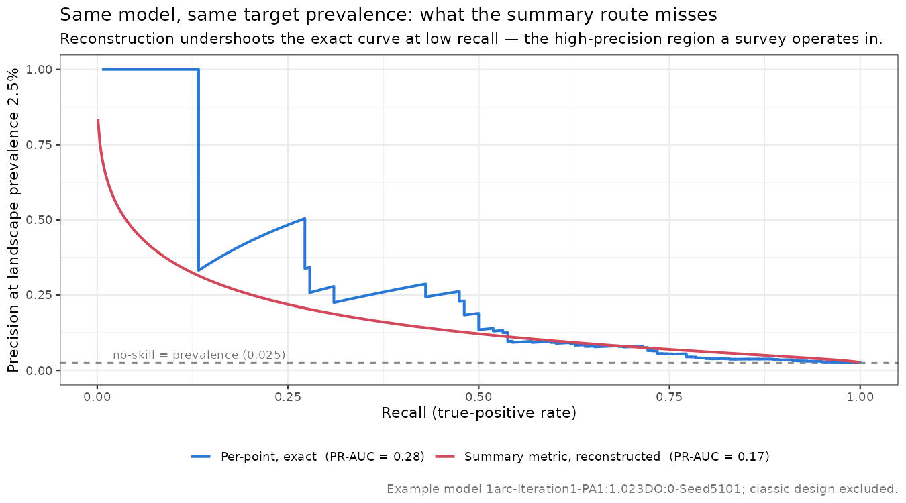

library(dcurves)Understanding the Benefits of Models in Land Management; Applications of Decision Curve Analysis
Abstract << 300 word max s>>
The application
Main << 3500 words // freeform section heading >>
Introduction << 400 words >>
Ecological models are being developed at an incredible rate. Unfortunately, the ability of land managers to use models is limited as a function of resources [@taddeo2026species]. Further, the benefit of applying models in decision making can oftentimes be difficult to estimate a priori, and a mismatch between the expectations of a model and it’s utility can lead to managers being discouraged from continuing to use academic research.
Here, we show that a framework used in clinical medical settings can help understand under what conditions a model can be helpful, and how they can complement expert judgement. Decision curve analysis (DCA) was developed in the early millenium by Vickers et al. (2006) to help practicing doctors evaluate medical studies in their everyday practice [@vickers2006decision]. This tool offers a relevant lens to contextualise the net benefits of using models under certain conditions, for phenomena at different prevalences across the landscape.
Conceptual Background << 300 words max // essential components >>
<< DCA Plot here >> all components labeled
Decision curve analysis is considered visually on a plot with two axis. The X axis is the prevalence of the phenomenom in the population. For example … The Y axis is the theshold probability (\(p_t\)), a metric each user will define based on their objectives. For example, if you were satisfied to find one new rare plant population per five sites surveyed (i.e. finding a new population 20% ofthe time) than the \(p_t\) is XX.
A DCA plot always contains a line with a fixed intercept, at 0, and slope of 0 (i.e. a horizontal line) ((NAME)); indicating the condition of making no action. A DCA also contains a line ((NAME)) with a Y intercept of the threshold probability, and a slope relating it to the prevalence of the phenomon in the population on the X axis. To the left of this line IS ((NAME)), to the right of it IS ((NAME)).
In practice, a DCA will generally contain two or more curves; although only one is required. If only a single model is available to inform decisions a curve of its … IS. The area above the ((NAME)) and ((NAME)) curve depicts the net benefit of the model for decision making. THIS is the …
The DCA may accomodate more than one model at a time, when additional models are available.
PR-AUC measures the ability of a model to detect the more rare class of an outcome, by using the precision (the accuracy of positive predictions) and recall (the ability to identify all positive instances) across different thresholds. PR-AUC, unlike the closely related ROC-AUC wherein a value of 0.5 indicates a model is no better than random chance, PR-AUC greater than prevalence indicates a more performant model. For example, if a species is truly distributed in 0.1 (10% of a landscape), and a model has a PR-AUC of 0.2, it is twice as likely to detect it at landscape prevalence as by chance. Hence PR-AUC, after correction to landscape prevalence,
From Patients to Pixels and Patches << 250 words >>
DCA traditional context relates to the population of patients that a doctor serves. The doctor is likely to have beliefs on how often a certain procedure, generally an invasive procedure to detect a disease, and under what conditions a procedure should be conducted. Notably, this framework requires discrete entities (e.g. patients) that the doctors beliefs on treatment and a model pertain to.
For a land management application, the population is the area managed by a practicioner. However, the discrete units must be something such as: allotments (or geographic units within allotments), that would receive a treatment, already known populations of a species, stream reaches, or forest patches etc. For the application of species distribution models to detect new species, the unit of analysis must be defined as patches of suitable habitat; which tend to only exist with high resolution models; or can be recovered via clustering techniques (which, why?).
WHILE CREATING SDMS we calculate PR-AUC from the ratio of presences to absence points. However, these data are rarely balanced to the scale of the landscape. Indeed it is common practice for certain models to reduce the absences to be roughly 1-10x the number of presences (Elith). Hence using a 1:1 ratio of P:A, we are reporting the measures of success for a taxon that would occupy 50% of the lanscape.
Clearly, this is not the case - even for many of the most common species. Therefore, in the naive approach, we correct the PR-AUC to represent the expected fraction of the landscape occupied by the taxon, for a rare species generally from 0.05% to 5% of a landscape.
Area of Applicability … here / bias here.
Case Study - Species Distribution Models << 250 words >>
Stuy System Background << 100 words >>
Eriogonum coloradense is a rare species endemic to the central Rocky Mountains of Colorado USA. In Benkendorf et al. 2027 we develop, and ground truth, species distribution models of it. We also iteratively refine these models using a variety of spatial cross-validation approaches
Applying DCA formulations to SDMs
\[\frac{p_t}{1 - p_t} = \frac{\text{cost of one unsuccessful site survey}}{\text{value of finding one occupied site}}\]
\[\text{Net benefit} = \underbrace{\frac{\text{occupied sites found}}{n}}_{\text{successes}} \;-\; \underbrace{\frac{\text{empty sites surveyed}}{n} \times \frac{p_t}{1 - p_t}}_{\text{cost of all unsuccessful site visits}}\]
Naive Formulation
The most accessible way to calculate a DCA curve for practioners is by metrics commonly reported in the literature (PR-AUC, recall (TPR), and FPR), along with an estimate of the species prevalence across the study area (discussed in ‘Using Summary Metrics’) For users with access to raw model predictions (the predicted probability, the observed presence/absence, and the location or applicability of each point) a more accurate assessment is possible, because the full precision–recall curve is observed rather than reconstructed from a handful of summary values (discussed in ‘Using Per-point Predictions’).
Using Summary Metrics
The most straightforward way to consider the benefits of using an SDM is to transform it’s PR-AUC, measured on held-out test data to the estimated landscape prevalence of the rare species. This is available as nearly all modellers report PR-AUC.
PR-AUC is transformed to the taxons landscape prevalence via:
\[\text{precision}_{\pi}(r) = \frac{O\, r}{O\, r + \text{FPR}(r)} \qquad\Longrightarrow\qquad \text{PR-AUC}_{\pi} = \int_{0}^{1} \text{precision}_{\pi}(r)\; dr\]
\[O = \frac{\pi}{1-\pi} \qquad \left(\text{e.g. } \pi = 0.025 \Rightarrow O \approx 0.026\right)\]
where \(r\) is recall, \(\text{FPR}(r)\) is the false-positive rate at that recall, and \(O\) is the prevalence odds — the odds a point drawn at random is occupied, set by the target landscape prevalence \(\pi\). Because recall and \(\text{FPR}(r)\) are properties of the model’s ROC and do not change with prevalence, the transform acts on precision alone: only the prevalence odds \(O\) moves.
Because PR-AUC is relative to the prevalence of the taxon across the landscape, values for rare species might be quite low. For example if a species has a prevalence of 2.5%, than a model with a PR-AUC of 0.25 is 10 times more likely to find it than an individual would by chance.
<< figure: a priori corrected PR-AUC (naive, pixel) vs realized — R/pr_auc_prevalence_correction.R >>
However 1) it is operating on pixels, assuming they are independent, and each likely to harbour the taxon 2) it assumes a perfectly calibrated model (e.g. a model without bias) 3) and it assumes the model is interpolating, not extrapolating, aross the entire landscape.
Using Per-point Predictions
The summary-metric route must assume a shape for the curve between the few reported values; the transform above needs \(\text{FPR}(r)\) at every recall, but a paper gives only its area. With the predicted probabilities for the held-out points the entire precision–recall curve is observed, so the landscape-prevalence estimate is obtained directly: each held-out point is re-weighted to the target prevalence (presence \(= \pi/n_1\), absence \(= (1-\pi)/n_0\)) and the net benefit, or PR-AUC, is recomputed with no assumption about the model’s ROC.
This is still the naive, pixel-level quantity — every held-out point treated as an independent decision — but computed exactly rather than reconstructed. Because all ~2000 fitted models for E. coloradense are retained, we take this exact route throughout.

Patch Formulation << 200 words >>
The above assumes a continuous landscape, however survey work and decisions are unlikely to be across the entire surface. Rather actions are likely to be made at smaller units. Here we show the benefit of using an SDM to visit discrete units of it’s prediction.
patch approach here // pure PR-AUC
A perfect model? << 200 words // where we need raw pr-auc values per point? >>
Discuss biases effects on the model here // bias introduced here
Area of Applicability and Extrapolation << 200 words >>
AOA versus extrapolation (and the benefits of fewer covariates and reductions of hyper-dimensional space)
Combining Expert Opinions and the model << 200 words >>
expert interpretation of top sites to visit and
Documentation << 200 words >>
Shiny app
small r + python wrapper packages
Communication template
Conclusion << 200 words >>
Biosketches << 150 words max >>
J.B.F. is the Director of Conservation at the Chicago Botanic Garden, member of the ~Illinois Endangered Species Counsel~ for XX years, and CPC/other ~office person~. The last ~ XX~ years of his career have focused on the conservation of rare plants ~ 1 2 3 4 5 words ~ and restoration. S.T. is a professor of ~Geo some flavour~ at the University of California San Diego. Her research focuses on enhancing urban wildland corridors and wetlands using decisions informed by remote sensing. R.C.B. worked as a field botanist and research ecologist for a variety of US federal and state land management agencies as well as NGOs, largely the Bureau of Land Management, for a decade as a contractor. He currently works as a geospatial consultant in private industry.
Literature Cited // << max 20 papers >>
Taddeo et al. 2026
Benkendorf et al. in prep 2027
Yee-law ~2023
article types notes below
Practitioner’s Perspective: Aims to bridge the gap between applied ecological research and the actual practice of species conservation, ecosystem restoration, pest management and the mitigation of environmental threats to biodiversity. They provide a platform for individuals involved in hands-on management of ecological resources - be they species, ecosystems or landscapes - to present their personal views on the direction of applied ecological research. The article should be of international relevance, even if based on a regional study, and should make clear recommendations regarding how the issue can be taken forward to ensure improved science-based practice. Contributions should be up to 4000 words in length (inclusive of all parts of the main manuscript) and contain no more than 20 references. The article should be written with the minimum of technical language and jargon, so as to be understandable to a general audience. These articles should not generally present new data or analysis (although this does not preclude a small amount of analysis providing evidence to support the opinions or perspectives given) or require online supporting information to be consulted. At least one author should have direct experience of the practical management of the environment. A short biosketch describing the research interests of the author(s) should be included (30-100 words for one author/150 words for the first three authors, respectively). Articles should be written in essay format with the subject headings selected according to the content of the manuscript. These articles should include a short abstract of no more than 300 words. It should consist of numbered paragraphs and the final paragraph needs to summarise the main management implications and recommendations. The authors’ contributions, data availability statement and references sections should be formatted according to manuscript specifications, below. Please visit the Practitioner’s Perspective page to view articles.